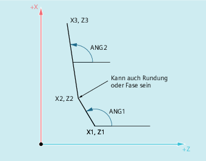

| Hinweis |
|
In der folgenden Beschreibung wird von davon ausgegangen, dass:
|
Der Endpunkt der ersten Geraden kann durch Angabe der kartesischen Koordinaten oder durch Angabe der Winkel der beiden Geraden programmiert werden. Der Endpunkt der zweiten Geraden muss immer kartesisch programmiert werden. Der Schnittpunkt der beiden Geraden kann als Ecke, Rundung oder als Fase ausgeführt werden.
ANG1: | Winkel der ersten Geraden |
ANG2: | Winkel der zweiten Geraden |
X1, Z1: | Anfangskoordinaten der ersten Geraden |
X2, Z2: | Endpunktkoordinaten der ersten Geraden bzw. |
X3, Z3: | Endpunktkoordinaten der zweiten Geraden |
Syntax
Programmierung des Endpunkts der ersten Geraden durch Angabe der Winkel
Ecke als Übergang zwischen den Geraden:
| ANG=… | |
| X… Z… ANG=… |
Rundung als Übergang zwischen den Geraden:
| ANG=… RND=... | |
| X… Z… ANG=… |
Fase als Übergang zwischen den Geraden:
| ANG=… CHR=... | |
| X… Z… ANG=… |
Programmierung des Endpunkts der ersten Geraden durch Angabe der Koordinaten
Ecke als Übergang zwischen den Geraden:
| X… Z… | |
| X… Z… |
Rundung als Übergang zwischen den Geraden:
| X… Z… RND=... | |
| X… Z… |
Fase als Übergang zwischen den Geraden:
| X… Z… CHR=... | |
| X… Z… |
Bedeutung


| Hinweis |
Weiterführende Informationen zur Programmierung einer Fase oder Rundung siehe " Fase, Rundung (CHF, CHR, RND, RNDM, FRC, FRCM) ". |
Beispiel
| Programmcode | Kommentar |
|---|---|
| N10 X10 Z80 F1000 G18 | ; Anfahren der Startposition. |
| N20 ANG=148.65 CHR=5.5 | ; Gerade mit Winkel- und Fasenangabe. |
| N30 X85 Z40 ANG=100 | ; Gerade mit Winkel- und Endpunktangabe. |
| N40 ... |